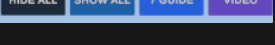

ROADMAP
LIVING DEVELOPMENT BOARD • UPCOMING MILESTONES • LAST UPDATED: NOVEMBER 12, 2026
Vision. Trajectory. Velocity.
Track the upcoming development cycle of LeSoCo—spanning Version 1.3.2 through Version 1.3.5—with targeted features across motion editing, split-screen kinematics, standalone desktop deployments, and website features.
LIVE ON MONOGRAPH
Official Monograph Roadmap
Explore our real-time development tracker, active sprint tickets, upcoming multi-IMU integrations, and community-requested features hosted directly on Monograph.
Open Live Roadmap ↗
monogr.ph/s/4Dr8yxLzxa
Version 1.3.2
Status: Active Sprint- Update version number to
1.3.2. - User must have a way to quit the LeSoCo application.
- UI will dynamically shrink according to screen size.
-
Coach and trainee split view function (Release 3):
- Add a warning if no motion is imported.
- Add a loading screen during the transition from split view to coach UI.
- Add in an unhide UI button when hidden.
- Add the hide button to the tutorial.
-
Add a highlight to show where user last clicked:
- If the user last clicked on the coach screen, the coach motion will be imported back to the coach UI when returning.
-
Motion editor:
- Enable hover to look at tooltip.
- Returning to the coach screen from the motion editor doesn't start a new session.
-
Bug fix:
- Fix a bug when loop is turned off, the motion continues playing after the trimmed section.
-
Reposition all the UI tools:

- Another UI overhaul(?)
-
Website:
- Add in animation.
- Reposition certain UI elements.
-
Automated motion detection system (Release 2):
-
Add a button to trigger the detection system in motion editor:
- Start off with a run:
- System has the ability to detect a run.
- Start off with a run:
-
Add a button to trigger the detection system in motion editor:
- Removal of the word “alpha” to just “release [number]” from feature in LeSoCo.
-
Bug fix:
- Fix a bug where pressing space bar doesn't play motion in split screen.
- Fix a bug where importing motion in trainee makes the motion be imported in both the trainee and coach split screen view.
- Decrease the size of the motion playhead.
- Moving “coach_benchmark” up to fit in the box.
Version 1.3.3
Status: In Planning • Compiled Executable- Update version number to
1.3.3. LeSoCo_v1.3.3.execompiled standalone executable deployment.- The tutorial won't show up again if user has gone through it once.
-
Allow each feature window to snap to each other without compromise:
- Currently, only certain feature windows are allowed to snap automatically.
-
Coach and trainee split view function (Release 4):
- Make the character model not appear when no motion is imported.
- Add the ability to move the camera view around.
-
Bug fix:
- When no motion is imported, going back to the coach UI displays a motion.
- Remove unnecessary second unhide UI button.
-
Motion editor:
- When the user trimmed, the thumbnail should follow where the start or end is following the cursor.
- Timeline should be greyed out when trimmed out.
- User should be unable to play motion when in tutorial.
-
Website:
- Add terms and conditions.
- Add privacy policy.
-
Automated motion detection system (Release 3):
- More updates to detect a run.
- A system to detect a preparation phase.
-
Implement a color-coded section for each phase for user to clearly identify each motion stage:
- No color for no motion or not part of the four stage motion
- Red for run
- Yellow for preparation
- Green for the kick/contact with ball
- Blue for follow-through
-
Bug fix:
-
When user imports trainee motion data, it will only be on the trainee tab:
- Switching to coach tab will display an error message telling the user to import in coach data.
-
Coach and trainee split screen view:
- Fix a bug where clicking the reset button doesn't reset the session.
- Fix a bug where no motion is ever imported but motion is detected in the coach UI or split screen.
-
Motion editor:
- Fix a bug where no motion is imported but returning to coach UI from editor shows motion is imported.
-
When user imports trainee motion data, it will only be on the trainee tab:
Version 1.3.4
Status: In Planning • Compiled Executable- Update version number to
1.3.4. -
Coach and trainee split view function (Release 5):
- Add a height feature.
-
When user imports a motion in the coach UI, opening split screen function will only import the coach motion, not the trainee:
- Trainee motion will have to be imported separately or vice versa.
- When in “Hide UI” mode, pressing play without a motion imported will give an error.
-
Bug fix:
- Fix a bug where pressing play on a motion hides the UI.
- Fix a bug where importing two completely different motion clips will bug out and stop playing the motion.
- Fix a bug where importing a motion doesn't show the character model.
- Fix animation when hiding UI.
-
Motion editor:
- The guide will show up when first pressed.
- Change the close guide to be a proper “X”.
- Resize each logo associated to each feature during the tutorial walkthrough.
- The tutorial doesn't move around when moving through each motion editor feature.
- Move some buttons position to improve visibility.
-
Automated motion detection system (Release 4):
- More updates to detect a run.
- More updates to detect a preparation.
- A system to detect a kick.
- If user clicks on the “auto detect” button, going back to the coach UI will display a pop-up showing the different motion stages.
-
Website:
- Remove version timeline.
- Add in visual effects.
- Edit privacy policy to include mocopi's privacy policy.
LeSoCo.v.1.3.4.execompiled standalone executable deployment.
Version 1.3.5
Status: Scheduled • Compiled Executable- Update version number to
1.3.5. LeSoCo.v.1.3.5.execompiled standalone executable deployment.-
Website:
- Reposition button on homepage to center.
-
Coach and trainee split view function (Release 6):
-
Add a different camera position feature:
- To view where the user's foot is when the ball is touched.
- Add in a pop-up for user to input their weight, age, height.
-
Add a different camera position feature:
-
Automated motion detection system (Release 5):
- More updates to detect a run.
- More updates to detect a preparation.
- More updates to detect a kick.
- A system to detect a follow-through.
-
Implement a motion detection backward and forward frame system into motion editor:
- The system will allow user to press the button and allow them to jump to the first frame of each stage motion.
Roadmap Architecture Specifications
Current Milestone
Version 1.3.3
Target Horizon
Version 1.3.5
Last Updated
November 12, 2026
Live Tracker
monogr.ph/s/4Dr8yxLzxa ↗
Source Code
GitHub Repository ↗
Deployment Format
Standalone .EXE per Release
Update Cadence
Sprint-by-Sprint on Monograph